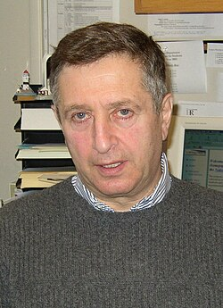

Yakov Sinai | |
|---|---|
Яков Синай | |
 Sinai in 2007 | |
| Born | Yakov Grigorevich Sinai September 21, 1935 Moscow, Russian SFSR, Soviet Union |
| Education | Moscow State University (BS, MS, PhD) |
| Known for | Measure-preserving dynamical systems, various works on dynamical systems, mathematical and statistical physics, probability theory, mathematical fluid dynamics |
| Spouse | Elena B. Vul |
| Awards | Boltzmann Medal (1986) Dannie Heineman Prize (1990) Dirac Prize (1992) Wolf Prize (1997) Nemmers Prize (2002) Lagrange Prize (2008) Henri Poincaré Prize (2009) Foreign Member of the Royal Society (2009) Leroy P. Steele Prize (2013) Abel Prize (2014) Marcel Grossmann Award (2015) |
| Scientific career | |
| Fields | Mathematics |
| Institutions | Moscow State University, Landau Institute for Theoretical Physics, Princeton University |
| Andrey Kolmogorov | |
Doctoral students | Leonid Bunimovich Nikolai Chernov Dmitry Dolgopyat Svetlana Jitomirskaya Anatole Katok Konstantin Khanin Grigory Margulis Valeriy Oseledets Leonid Polterovich Marina Ratner Corinna Ulcigrai |
Yakov Grigorevich Sinai (Russian: Я́ков Григо́рьевич Сина́й; born September 21, 1935) is a Russian–American mathematician known for his work on dynamical systems. He contributed to the modern metric theory of dynamical systems and connected the world of deterministic (dynamical) systems with the world of probabilistic (stochastic) systems.[1] He has also worked on mathematical physics and probability theory.[2] His efforts have provided the groundwork for advances in the physical sciences.[1]
Sinai has won several awards, including the Nemmers Prize, the Wolf Prize in Mathematics and the Abel Prize. He has served as professor of mathematics at Princeton University since 1993 and holds the position of Senior Researcher at the Landau Institute for Theoretical Physics in Moscow, Russia.
Yakov Grigorevich Sinai was born into a Russian Jewish academic family on September 21, 1935, in Moscow, Soviet Union (now Russia).[3] His parents, Nadezda Kagan and Gregory Sinai, were both microbiologists. His grandfather, Veniamin Kagan, headed the Department of Differential Geometry at Moscow State University and was a major influence on Sinai's life.[3]
Sinai received his bachelor's and master's degrees from Moscow State University.[2] In 1960, he earned his Ph.D., also from Moscow State; his adviser was Andrey Kolmogorov. Together with Kolmogorov, he showed that even for "unpredictable" dynamic systems, the level of unpredictability of motion can be described mathematically. In their idea, which became known as Kolmogorov–Sinai entropy, a system with zero entropy is entirely predictable, while a system with non-zero entropy has an unpredictability factor directly related to the amount of entropy.[1]
In 1963, Sinai introduced the idea of dynamical billiards, also known as "Sinai Billiards". In this idealized system, a particle bounces around inside a square boundary without loss of energy. Inside the square is a circular wall, of which the particle also bounces off. He then proved that for most initial trajectories of the ball, this system is ergodic, that is, after a long time, the amount of that time the ball will have spent in any given region on the surface of the table is approximately proportional to the area of that region. It was the first time anyone proved such a dynamical system was ergodic.[1]
Also in 1963, Sinai announced a proof of the ergodic hypothesis for a gas consisting of n hard spheres confined to a box. The complete proof, however, was never published, and in 1987 Sinai declared that the announcement was premature. The problem remains open to this day.[4]
Other contributions in mathematics and mathematical physics include the rigorous foundations of Kenneth Wilson's renormalization group-method, which led to Wilson's Nobel Prize for Physics in 1982, Gibbs measures in ergodic theory, hyperbolic Markov partitions, proof of the existence of Hamiltonian dynamics for infinite particle systems by the idea of "cluster dynamics", description of the discrete Schrödinger operators by the localization of eigenfunctions, Markov partitions for billiards and Lorenz map (with Bunimovich and Chernov), a rigorous treatment of subdiffusions in dynamics, verification of asymptotic Poisson distribution of energy level gaps for a class of integrable dynamical systems, and his version of the Navier–Stokes equations together with Khanin, Mattingly and Li.
From 1960 to 1971, Sinai was a researcher in the Laboratory of Probabilistic and Statistical Methods at Moscow State University. In 1971 he accepted a position as senior researcher at the Landau Institute for Theoretical Physics in Russia, while continuing to teach at Moscow State. He had to wait until 1981 to become a professor at Moscow State, likely because he had supported the dissident poet, mathematician and human rights activist Alexander Esenin-Volpin in 1968.[5]
Since 1993, Sinai has been a professor of mathematics at Princeton University, while maintaining his position at the Landau Institute. For the 1997–98 academic year, he was the Thomas Jones Professor at Princeton, and in 2005, the Moore Distinguished Scholar at the California Institute of Technology.[3]
In 2002, Sinai won the Nemmers Prize for his "revolutionizing" work on dynamical systems, statistical mechanics, probability theory, and statistical physics.[2] In 2005, the Moscow Mathematical Journal dedicated an issue to Sinai writing "Yakov Sinai is one of the greatest mathematicians of our time ... his exceptional scientific enthusiasm inspire[d] several generations of scientists all over the world."[3]
In 2013, Sinai received the Leroy P. Steele Prize for Lifetime Achievement.[3] In 2014, the Norwegian Academy of Science and Letters awarded him the Abel Prize, for his contributions to dynamical systems, ergodic theory, and mathematical physics.[6] Presenting the award, Jordan Ellenberg said Sinai had solved real world physical problems "with the soul of a mathematician".[1] He praised the tools developed by Sinai which demonstrate how systems that look different may in fact have fundamental similarities. The prize comes with 6 million Norwegian krone,[1] equivalent at the time to $US 1 million or £600,000. He was also inducted into the Norwegian Academy of Science and Letters.[7]
Other awards won by Sinai include the Boltzmann Medal (1986), the Dannie Heineman Prize for Mathematical Physics (1990), the Dirac Prize (1992), the Wolf Prize in Mathematics (1997), the Lagrange Prize (2008) and the Henri Poincaré Prize (2009).[2][3] He is a member of the United States National Academy of Sciences, the Russian Academy of Sciences, and the Hungarian Academy of Sciences.[2] He is an honorary member of the London Mathematical Society (1992) and, in 2012, he became a fellow of the American Mathematical Society.[2][8] Sinai has been selected an honorary member of the American Academy of Arts and Sciences (1983), Brazilian Academy of Sciences (2000), the Academia Europaea, the Polish Academy of Sciences, and the Royal Society of London. He holds honorary degrees from the Budapest University of Technology and Economics, the Hebrew University of Jerusalem, Warwick University, and Warsaw University.[3]
Sinai has authored more than 250 papers and books. Concepts in mathematics named after him include Minlos–Sinai theory of phase separation, Sinai's random walk, Sinai–Ruelle–Bowen measures, and Pirogov–Sinai theory, Bleher–Sinai renormalization theory. Sinai has overseen more than 50 PhD candidates.[3] He has spoken at the International Congress of Mathematicians four times.[2] In 2000, he was a plenary speaker at the First Latin American Congress in Mathematics.[3]
Sinai is married to mathematician and physicist Elena B. Vul. The couple have written several joint papers.[3]
{kind=link}